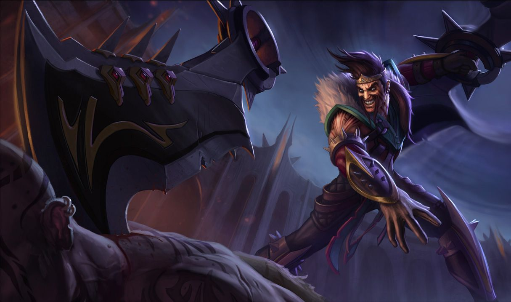

드레이븐
드레이븐
드레이븐, 화려한 처형자
Draven, the Grorious Executioner

1. 배경
2. 스킬
2.1. 패시브 - 드레이븐의 리그(League of Draven)
드레이븐이 챔피언을 처치할 때마다 40+중첩당 2.5골드를 추가로 획득합니다. 드레이븐이 사망하면 중첩 중 75%가 사라집니다.
2.2. Q - 회전 도끼(Spinning Axe)
드레이븐은 한 번에 2개의 회전 도끼를 들 수 있습니다.
2.3. W - 광기의 피(Blood Rush)
드레이븐이 회전 도끼를 잡으면 이 스킬의 재사용 대기시간이 초기화됩니다.
2.4. E - 비켜서라(Stand Aside)
2.4. R - 죽음의 소용돌이(Whirling Death)
적 챔피언이 죽음의 소용돌이에 피해를 입어 체력이 드레이븐의 현재 드레이븐의 리그 중첩의 100% 이하가 되면 드레이븐이 해당 챔피언을 처치합니다.
3. 장점
강력한 스노우볼링 능력
드레이븐은 킬캐치에 성공할때마다 골드를 수급할 수 있는 패시브로 인해 한 번 우세를 잡는 순간 '골드 수급 - 아이템 구비로 딜 강화 - 강화된 딜로 킬을 올려 또 골드 수급' 사이클을 반복해 눈사태 수준의 스노우볼링을 굴릴 수 있다. 극후반 풀템전이 아닌 이상에야 드레이븐이 킬을 못 먹어도 안 죽고 스택만 잘 유지했다면 어찌저찌 한 방 터뜨려서 크게 굴릴 수 있다. 또한 궁극기가 킬 캐치에 특화되어 있고 주력 딜링기인 Q는 공격력 계수가 매우 높은 평타 강화기인 만큼 템빨을 매우 잘 받아서 이러한 골드를 앞세운 스노우볼이 한 번 구르기 시작하면 매우 파괴적으로 굴러간다. 한번 흥해버린 드레이븐을 필두로 극단적으로 스노우볼이 잘 굴러간 사례가 그 유명한 1557 경기.뛰어난 전투 지속력
4. 단점
최악의 컨트롤 난이도
고난도 챔피언 중에서도 최고난도 하나 꼽으라 하면 반드시 거론되는 챔피언 중 하나가 드레이븐이다. 원인은 바로 드레이븐의 까다로운 회전도끼 매커니즘으로, 한타 때 최고의 딜량 기대값을 뽐내기 위해서는 2도끼 중첩을 유지한 상태로 한타에 임해야 하는데, 교전중에도 각종 CC기와 도끼 회수위치가 겹치는 경우가 많기때문에 피할 스킬을 피하고 버릴 도끼는 버리면서 싸워야한다. 이러한 난이도와 타 원딜 챔프와 매우 이질적인 메커니즘 때문에 최고의 기량을 가지고 있는 프로게이머들 사이에서도 대회 픽으로 드레이븐을 꺼내들기 위해서는 많은 연습시간을 투자해야 하며, 조커픽 드레이븐의 전략적 가치가 매우 높아지기 전만 해도 상당히 비선호되는 장인형 픽이었다.극단적인 리스크

저작물은 CC BY-NC-SA 2.0 KR에 따라 이용할 수 있습니다. (단, 라이선스가 명시된 일부 문서 및 삽화 제외)